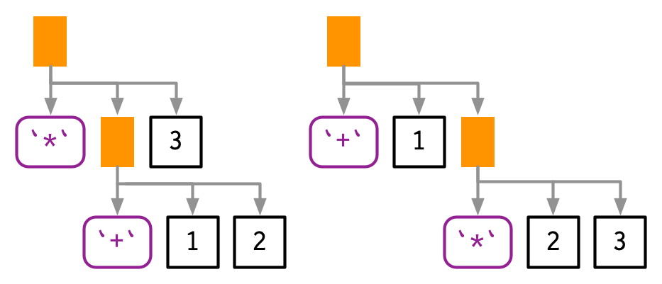

y <- x * 10
#> Error: object 'x' not found18 Expressions
Introduction
想要理解“expression”的结构并运用它，我们需要学习一些新的概念，新的工具以及新的思考方式。
首先就是在代码的执行和结果上有着显著差异，例如，当我们没有定义x时，计算y <- x * 10会报错：
但是如果我们能够将“要执行的代码”和“执行的过程”分开，那么问题就迎刃而解了。例如使用rlang::expr()：
z <- rlang::expr(y <- x * 10)
z
#> y <- x * 10expr()返回一个“表达式”，这个表达式对象包含了“代码”，但是没有“执行”。我们可以使用base::eval()来执行这个“表达式”：
x <- 5
eval(z)
y
#> [1] 50这样就将两个过程分离开来，本章的主要内容就是“表达式”这类对象的数据结构。掌握了这些内容，你就可以查看和修改“表达式”，也即修改了代码或者生成了代码。
Outline
- 18.2节：介绍语法抽象树（Abstract Syntax Tree，AST）思想，它是所有R代码的底层数据结构。
- 18.3节：深入了解AST，构成“表达式”的数据类型：constants，symbol，call，pairlist，missing argument。
- 18.4节：介绍解析字符串为表达式，并探讨R中的语法。
- 18.5节：介绍如何使用递归函数来处理“language”对象和“表达式”。
- 18.6节：介绍三种特殊的数据类型：pairlist，missing argument，expression vector。
Prerequisites
library(rlang)
library(lobstr)Abstract Syntax Tree
“表达式”基于抽象语法树（Abstract Syntax Tree，AST）这一数据结构类型。理解该数据结构对检查和修改“表达式”至关重要。
Drawing
本书会采用两种方式来展示AST，以f(x, "y", 1)为例：
通过手绘：

通过
lobstr::ast()
lobstr::ast(f(x, "y", 1))
#> █─f
#> ├─x
#> ├─"y"
#> └─1两种方法都遵循相同的惯例：
- 树叶类型：symbol（如
f,x），constant（如1,"y"）。- symbol：采用紫色（圆角矩形）
- constant：采用灰色（黑色，方角矩形）
- 字符串会带有引号。
- 树枝类型：call，采用橙色方角矩形。
- “call”对象的第一个元素是函数名，其余元素是参数。
注意：本书中由lobstr::ast()函数生成的树没有颜色，你需要在终端内查看。
上面的例子只有一层，实际中的“表达式”会有很多层。例如f(g(1, 2), h(3, 4, i()))：

lobstr::ast(f(g(1, 2), h(3, 4, i())))
#> █─f
#> ├─█─g
#> │ ├─1
#> │ └─2
#> └─█─h
#> ├─3
#> ├─4
#> └─█─i注意：如果函数的表达式中没有参数，例如i()，在最终的树中，它仅会被表示为symbol。
树枝的顺序通常也表示了函数的执行顺序（由深到浅执行），但由于惰性评估的存在，也可能会出现跳过某个树枝的情况。
Non-code components
AST在捕获代码时，会忽略空格与注释等不运行的部分。
ast(
f(x, y) # important!
)
#> █─f
#> ├─x
#> └─y只有一个地方会考虑空格：
lobstr::ast(y <- x)
#> █─`<-`
#> ├─y
#> └─x
lobstr::ast(y < -x)
#> █─`<`
#> ├─y
#> └─█─`-`
#> └─xInfix calls
R 中的任何函数都可以写成“prefix”型式。y <- x * 10实际上是由<-和*两个函数组成：
y <- x * 10
`<-`(y, `*`(x, 10))
lobstr::ast(`<-`(y, `*`(x, 10)))
#> █─`<-`
#> ├─y
#> └─█─`*`
#> ├─x
#> └─10lobstr::ast(function(x = 1, y = 2) {})
#> █─`function`
#> ├─█─x = 1
#> │ └─y = 2
#> ├─█─`{`
#> └─NULLExpressions
本节介绍构成“表达式”的主要三种数据类型——constant，symbol，call。
Constants
常量是AST中最简单的数据类型。它是除NULL意外的任意长度为1的原子向量，例如TRUE,1L,2.5,"hello"。可以使用rlang::is_syntactic_literal()检查是否是“常量”。
用于表示常量的“表达式”和常量本身是相同的，可以说常量是“自引用”：
identical(expr(TRUE), TRUE)
identical(expr(1), 1)
identical(expr(2L), 2L)UE
identical(expr("x"), "x")
#> Error in parse(text = input): <text>:3:24: unexpected symbol
#> 2: identical(expr(1), 1)
#> 3: identical(expr(2L), 2L)UE
#> ^Symbols
符合表示对象绑定的名称，例如：x,mean,mtcars等。在base R中，is.name()和is.symbol()都可以用来检查是否为“符号”。
“rlang”包提供了两种创建符号的方法：expr()和sym()。sym()函数直接将一个字符串转换为符号。
expr(x)
#> x
sym("x")
#> x可以使用as.character()和rlang::as_string()将符号转换为字符串。
as.character(sym("x"))
#> [1] "x"
rlang::as_string(sym("x"))
#> [1] "x"注意：符号类型不能被向量化，它的长度总是1；如果想要创建多个符号，需要将他们组合为列表，并使用rlang::syms()。
Calls
call object是被捕获的函数，它是一种特殊的列表（pairlist）——首个元素是函数名，后续元素是参数。call object 在AST中组成了树枝。使用is.call()检查是否是call object，typeof()和str()作用于call object时总是返回“language”。
lobstr::ast(read.table("important.csv", row.names = FALSE))
#> █─read.table
#> ├─"important.csv"
#> └─row.names = FALSE
x <- expr(read.table("important.csv", row.names = FALSE))
typeof(x)
#> [1] "language"
str(x)
#> language read.table("important.csv", row.names = FALSE)
is.call(x)
#> [1] TRUE“表达式”中的常量或符号类型的长度始终为1和call object有关，因为c()也是函数。
Subsetting
call object类似于列表，可以使用标准的提取函数。它的首个元素是函数名，通常是符号类型：
x[[1]]
#> read.table
is.symbol(x[[1]])
#> [1] TRUE其余元素是参数：
as.list(x[-1])
#> [[1]]
#> [1] "important.csv"
#>
#> $row.names
#> [1] FALSE可以使用[[或$提取：
x[[2]]
#> [1] "important.csv"
x$row.names
#> [1] FALSE添加新的元素：
x$header <- TRUE
x
#> read.table("important.csv", row.names = FALSE, header = TRUE)由于R灵活的参数匹配规则，有时候提取特定的参数会变得很困难，此时可以使用call_match()将调用的函数参数补齐并标准化：
rlang::call_match(x, read.table)
#> read.table(file = "important.csv", header = TRUE, row.names = FALSE)Function position
call object 的首个元素是function position，它是“表达式”被评估时调用的函数名，通常是符号类型：
lobstr::ast(foo())
#> █─foo尽管R允许函数名添加引号，但在被评估后依然会转换为符号类型：
lobstr::ast("foo"())
#> █─foocall object 的首个元素无法修改其name属性，其余属性可以：
x <- expr(foo(x = 1))
names(x)
#> [1] "" "x"
names(x) <- c("x", "")
x
#> foo(1)如果函数不再当前环境中，表达式会添加对函数检索的步骤，例如：函数在某个包、属于某个R6类型、由某个函数工厂创建等。
lobstr::ast(pkg::foo(1))
#> █─█─`::`
#> │ ├─pkg
#> │ └─foo
#> └─1
lobstr::ast(obj$foo(1))
#> █─█─`$`
#> │ ├─obj
#> │ └─foo
#> └─1
lobstr::ast(foo(1)(2))
#> █─█─foo
#> │ └─1
#> └─2
Constructing
使用rlang::call2()可以构建一个call object：
call2("mean", x = sym(x), na.rm = TRUE)
#> Error in `sym()`:
#> ! Can't convert a call to a symbol.
call2(expr(base::mean), x = sym(x), na.rm = TRUE)
#> Error in `sym()`:
#> ! Can't convert a call to a symbol.infix call 的创建方式一样：
call2("<-", sym(x), 10)
#> Error in `sym()`:
#> ! Can't convert a call to a symbol.我们会在下一章介绍更强大的工具来创建复杂的call object。
Summary
下表总结了str()和typeof()处理不同“表达式”类型的结果：
str() |
typeof() |
|
|---|---|---|
| Scalar constant | logi/int/num/chr |
logical/integer/double/character |
| Symbol | symbol |
symbol |
| Call object | language |
language |
| Pairlist | Dotted pair list | pairlist |
| Expression vector | expression() |
expression |
下表总结了base R 和 “rlang” 提供的用于检测“表达式”类型的函数：
| base | rlang | |
|---|---|---|
| Scalar constant | — | is_syntactic_literal() |
| Symbol | is.symbol() |
is_symbol() |
| Call object | is.call() |
is_call() |
| Pairlist | is.pairlist() |
is_pairlist() |
| Expression vector | is.expression() |
— |
Parsing and grammar
计算机将字符串转为为“表达式”的过程称为解析（parsing），这个过程遵循一系列语法（grammar）。本节我们通过lobstr::ast()函数来探讨解析过程中的语法，以及如何相互转换“表达式”与字符串。
Operator precedence
infix 函数的使用会产生两种歧义。第一种歧义类似于：1 + 2 * 3会产生什么，是9（(1 + 2) * 3）还是7（1 + (2 * 3)）？

编程语言使用操作符优先级（operator precedence）来确定表达式的计算顺序。我们可以使用lobstr::ast()来查看实际的计算顺序： **）
lobstr::ast(1 + 2 * 3)
#> █─`+`
#> ├─1
#> └─█─`*`
#> ├─2
#> └─3预测数学操作符是比较容易的，因为它遵循我们学习过的数学规则。预测其他运算符的优先级则会困难一些，例如R中的!优先级通常比较低：
lobstr::ast(!x %in% y)
#> █─`!`
#> └─█─`%in%`
#> ├─x
#> └─y
lobstr::ast(!1 + !1)
#> █─`!`
#> └─█─`+`
#> ├─1
#> └─█─`!`
#> └─1
!1 + !1
#> [1] FALSER 有着超过30种，被划分为18个类的infix运算符，详细细节见?Syntax。通常很少有人能记住完整的顺序，如果有任何混淆，请使用括号(！
lobstr::ast((1 + 2) * 3)
#> █─`*`
#> ├─█─`(`
#> │ └─█─`+`
#> │ ├─1
#> │ └─2
#> └─3Associativity
第二种歧义类似于多个相同的infix运算符的优先级。例如1 + 2 + 3与1 + (2 + 3)的关系，很显然是等价的，但在某些情况如geom之间使用的+，执行的先后并不等价。在R中，大多数运算符都遵循从左到右的执行顺序。
lobstr::ast(1 + 2 + 3)
#> █─`+`
#> ├─█─`+`
#> │ ├─1
#> │ └─2
#> └─3幂运算与赋值运算相反：
lobstr::ast(2^2^3)
#> █─`^`
#> ├─2
#> └─█─`^`
#> ├─2
#> └─3
lobstr::ast(x <- y <- z)
#> █─`<-`
#> ├─x
#> └─█─`<-`
#> ├─y
#> └─zParsing and deparsing
在终端输入代码并执行的过程伴随着终端对代码字符串的解析。同样地，我们也可以将要运行的代码写成字符串形式，然后在必要的地方解析并执行它。
你可以使用rlang::parse_env()函数解析：
x1 <- "y <- x + 10"
x1
#> [1] "y <- x + 10"
is.call(x1)
#> [1] FALSE
x2 <- rlang::parse_expr(x1)
x2
#> y <- x + 10
is.call(x2)
#> [1] TRUEparse_expr()总是产生一个“表达式”，如果你的代码字符串中包含;或\n，需要使用parse_exprs()来解析，生成一个“表达式”列表：
x3 <- "a <- 1; a + 1"
rlang::parse_exprs(x3)
#> [[1]]
#> a <- 1
#>
#> [[2]]
#> a + 1如果你经常处理代码字符串，你应该重新考虑处理方式。阅读第19章，并考虑是否可以使用准引号更安全地生成“表达式”。
base R中的解析函数是parse()，我们会在18.6.3节中详细介绍。该函数需要使用text参数来接受代码字符串。
parse(text = x1)
#> expression(y <- x + 10)可以使用rlang::expr_text()函数还原（deparsing）一个“表达式”，这个函数在每次打印“表达式”时调用。
z <- expr(y <- x + 10)
expr_text(z)
#> [1] "y <- x + 10"要注意：解析与还原不是对称的，因为解析的过程会自动忽略“空格”、“注释”等不执行的符号：
cat(expr_text(expr({
# This is a comment
x <- `x` + 1
})))
#> {
#> x <- x + 1
#> }当使用base R 中的deparse()函数时，要注意它返回的是每行一个字符串的向量。
as.list(deparse(expr({
# This is a comment
x <- `x` + 1
})))
#> [[1]]
#> [1] "{"
#>
#> [[2]]
#> [1] " x <- x + 1"
#>
#> [[3]]
#> [1] "}"Walking AST with recursive functions
本节我们以一个复杂的案例来总结上述有关AST的内容。案例的灵感来自于“codetools”包中的两个函数：
findGlobals()：可以找出某个函数中使用的全局变量，帮助你检查函数是否独立。checkUsage()：可以检查函数中未使用的局部变量和参数以及参数匹配时只部分使用。
在这里，我们不会实现上面两个函数的全部内容，而只关注它们共同的底层逻辑——递归（变量）AST。因为构成递归函数的两部分与AST的树形数据结构高度适配：
- recursive case处理树AST中的节点。递归函数在处理完某个节点后，会继续递归处理该节点的子节点，最终整理结果。就“表达式”而言，节点就是“call object”和“pairlists”。
- base case处理AST的叶子。当递归函数处理到“叶子”时，表示递归终止。就“表达式”而言，叶子就是“constant”和“symbol”。
为了使这个模式更容易理解，我们需要两个辅助函数。首先，我们定义expr_type()函数, 它将返回“constant”、“symbol”、“call”、“pairlist”以及其他任何类型的“type”:
expr_type <- function(x) {
if (rlang::is_syntactic_literal(x)) {
"constant"
} else if (is.symbol(x)) {
"symbol"
} else if (is.call(x)) {
"call"
} else if (is.pairlist(x)) {
"pairlist"
} else {
typeof(x)
}
}
expr_type(expr("a"))
#> [1] "constant"
expr_type(expr(x))
#> [1] "symbol"
expr_type(expr(f(1, 2)))
#> [1] "call"将expr_type()函数与switch()函数结合：
switch_expr <- function(x, ...) {
switch(expr_type(x),
...,
stop("Don't know how to handle type ", typeof(x), call. = FALSE)
)
}使用switch_expr()函数对不同类型“表达式”进行处理（感觉作者是在秀操作，直接expr_tyee()里面加处理步骤不行吗？）：
recurse_call <- function(x) {
switch_expr(x,
# Base cases
symbol = ,
constant = ,
# Recursive cases
call = ,
pairlist =
)
}Finding F and T
我们首先定义一个能判断代码中是否使用了TRUE或FALSE的缩写T或F的函数。
TRUE与T在AST中是不同的类型：TRUE属于常量，而T属于符号。
expr_type(expr(TRUE))
#> [1] "constant"
expr_type(expr(T))
#> [1] "symbol"所以我们可以根据数据类型来判断：
logical_abbr_rec <- function(x) {
switch_expr(x,
constant = FALSE,
symbol = as_string(x) %in% c("F", "T")
)
}
logical_abbr_rec(expr(TRUE))
#> [1] FALSE
logical_abbr_rec(expr(T))
#> [1] TRUE上面的函数可以结合enexpr()，无需每次输入都捕获“表达式”：
logical_abbr <- function(x) {
logical_abbr_rec(enexpr(x))
}
logical_abbr(T)
#> [1] TRUE
logical_abbr(FALSE)
#> [1] FALSE接下来，我们补齐递归函数，使用purrr::some()函数执行递归：
logical_abbr_rec <- function(x) {
switch_expr(x,
# Base cases
constant = FALSE,
symbol = as_string(x) %in% c("F", "T"),
# Recursive cases
call = ,
pairlist = purrr::some(x, logical_abbr_rec)
)
}
logical_abbr(mean(x, na.rm = T))
#> [1] TRUE
logical_abbr(function(x, na.rm = T) FALSE)
#> [1] TRUEFinding all variables created by assignment
本节我们实现函数——找到代码中所有通过赋值函数创建的变量。
简单回顾一下赋值函数的AST结构：第一个是赋值函数<-，第二个是变量名，第三个是值。
ast(x <- 10)
#> █─`<-`
#> ├─x
#> └─10同样，我们先编写“base case”部分，提取的变量名在AST中是符合类型，所以我们只处理“symbol”：
find_assign_rec <- function(x) {
switch_expr(x,
constant = ,
symbol = character()
)
}
find_assign <- function(x) find_assign_rec(enexpr(x))
find_assign("x")
#> character(0)
find_assign()
#> character(0)使用purrr::flatten_chr将递归的结果展开为向量：
flat_map_chr <- function(.x, .f, ...) {
purrr::flatten_chr(purrr::map(.x, .f, ...))
}
flat_map_chr(letters[1:3], ~ rep(., sample(3, 1)))
#> [1] "a" "a" "b" "b" "b" "c" "c" "c"“recursive case”部分，我们对“pairlists”类型递归处理并整合结果，对“call”类型进行<-检验，直接提取<-中的变量或接着递归处理：
find_assign_rec <- function(x) {
switch_expr(x,
# Base cases
constant = ,
symbol = character(),
# Recursive cases
pairlist = flat_map_chr(as.list(x), find_assign_rec),
call = {
if (is_call(x, "<-")) {
as_string(x[[2]])
} else {
flat_map_chr(as.list(x), find_assign_rec)
}
}
)
}
find_assign(a <- 1)
#> [1] "a"
find_assign({
a <- 1
{
b <- 2
}
})
#> [1] "a" "b"现在我们需要将函数变得更加鲁棒，考虑如果一个变量被多次赋值：
find_assign({
a <- 1
a <- 2
})
#> [1] "a" "a"我们需要对结果做一些处理：
find_assign <- function(x) unique(find_assign_rec(enexpr(x)))
find_assign({
a <- 1
a <- 2
})
#> [1] "a"再考虑，如果多次调用<-：
find_assign({
a <- b <- c <- 1
})
#> [1] "a"我们需要对“call”部分单独使用额外的函数来处理：
find_assign_call <- function(x) {
if (is_call(x, "<-") && is_symbol(x[[2]])) {
lhs <- as_string(x[[2]])
children <- as.list(x)[-1]
} else {
lhs <- character()
children <- as.list(x)
}
c(lhs, flat_map_chr(children, find_assign_rec))
}
find_assign_rec <- function(x) {
switch_expr(x,
# Base cases
constant = ,
symbol = character(),
# Recursive cases
pairlist = flat_map_chr(x, find_assign_rec),
call = find_assign_call(x)
)
}
find_assign(a <- b <- c <- 1)
#> [1] "a" "b" "c"
find_assign(system.time(x <- print(y <- 5)))
#> [1] "x" "y"
ast(a <- b <- c <- 1)
#> █─`<-`
#> ├─a
#> └─█─`<-`
#> ├─b
#> └─█─`<-`
#> ├─c
#> └─1Specialised data structures
本节介绍AST中剩余的两种数据结构和一种特殊的符号。它们在实践中不是很重要。
Pairlists
“pairlist”是R过去的遗留物，几乎被列表（list）所取代。唯一用到的地方是function()函数，它用来储存函数正式的参数。
f <- expr(function(x, y = 10) x + y)
args <- f[[2]]
args
#> $x
#>
#>
#> $y
#> [1] 10
typeof(args)
#> [1] "pairlist"在实践中，你可以直接将“pairlist”转换成列表使用：
pl <- pairlist(x = 1, y = 2)
length(pl)
#> [1] 2
pl$x
#> [1] 1“pairlist”的底层使用链表（linked list）这种数据结构实现，这导致它的提取子集动作要慢一些，但不影响实际体验。
Missing arguments
空符号用来表示缺失的参数，而非缺失值。它唯一出现的场景是你在创建有缺失参数的函数时。
可以使用missing_arg()或expr()创建一个缺失参数。
missing_arg()
typeof(missing_arg())
#> [1] "symbol"空符号不会打印任何内容，需要使用rlang::is_missing()来检查。
is_missing(missing_arg())
#> [1] TRUE可以在原生的函数形式中发现它：
f <- expr(function(x, y = 10) x + y)
args <- f[[2]]
is_missing(args[[1]])
#> [1] TRUE注意：...始终与空符号匹配。
f <- expr(function(...) list(...))
args <- f[[2]]
is_missing(args[[1]])
#> [1] TRUE空符号有一个特殊的属性：如果你将他赋值给一个变量，在调用整个变量时，会报错。
x <- missing_arg()
x
#> Error: argument "x" is missing, with no default但如果你将它存储到某个数据结构中，它将正常地工作。
ms <- list(missing_arg(), missing_arg())
ms[[1]]如果需要保留变量的缺失性，rlang::maybe_missing()通常很有用。它允许你引用潜在的缺失变量，而不会触发错误。请参阅用例文档和更多详细信息。
Expression vectors
最后，我们简单讨论一下“expression vectors”。它是由两个base R环境中的函数生成——parse()和expression()。
exp1 <- parse(text = c("
x <- 4
x
"))
exp2 <- expression(x <- 4, x)
typeof(exp1)
#> [1] "expression"
typeof(exp2)
#> [1] "expression"
exp1
#> expression(x <- 4, x)
exp2
#> expression(x <- 4, x)“expression vectors”的行为更像一个列表：
length(exp1)
#> [1] 2
exp1[[1]]
#> x <- 4本质上，“expression vectors”与我们前进介绍的“表达式”列表是相同的。